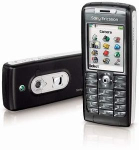
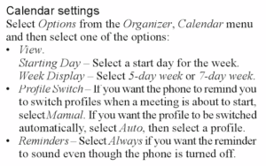
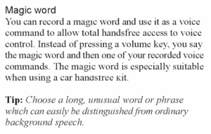

Recently, the Connected crew were discussing ideas for iOS 9 and describing putt…

Recently, the Connected crew were discussing ideas for iOS 9 and describing putting iPhone into Do Not Disturb based on calendar events. On Nerds on Draft, Gabe and Jeff have talked about automation on iOS and on OS X. This got me thinking about my favorite phone of all time, the Sony Ericsson T637. This was my first real experience with tech automation. Combined with a single 3rd party app, this is the only phone that allowed me to feel like and appear as a wizard relative to what everyone else around me was doing.Calendar-based Do Not Disturb

When I was in graduate school, many of my professors were understandably strict about cell phones in class. This was still pretty early days for cell phone ubiquity, and many were still adapting. But, while I had the T637, my phone never rang during class. If the phone did ring and the professor lecturing, she either started early or went over her time. Because my phone supported this automatic profile switching based on my calendar, I appeared to be so on top of things that my phone never rang during class, and I got the immature satisfaction of a smug smile each time someone else's phone rang during class.Ahoy, Telephone

My T637 also supported an arbitrary magic word. Go into a quiet room, and record yourself saying, "Ahoy, telephone," and flip a switch, and the phone would be always listening for you to say the magic word and leap to your service. This feature worked remarkably well, but as the warning says in the manual, it was an obvious drain on battery life. But, the T637 had a replaceable battery, and I carried a couple of spares.Sync
When it comes to sync, the T637 was able to sync over Bluetooth with my iBook via iSync. I think iSync is one of the most underrated applications that Apple ever created. From Palm Pilots through the pre-iPhone days, iSync was solidly reliable for syncing my portable productivity devices. Perhaps this is mostly because I rarely added or changed data on the mobile devices, but I never had any syncing issues with iSync in the several years that I used it.Games
My T637 had Snake and Mini Golf. That should be enough to entertain anyone for hours, but since my wife had the same phone, we could play two player Mini Golf! I had one particularly painful class that my graduate school required in order to make sure we knew how to use a library and computers, and it was taught by the single most boring human being to ever walk the planet. I chose a strategic seat near the hallway wall, and my wife would come sit on the other side of the wall and play Mini Golf with me over Bluetooth during the class because she's the best.Salling Clicker
Salling Clicker is possibly my favorite Mac + mobile combination of all time. It earned five mice and an Eddy from Macworld and two ADA's in 2003. I initially purchased SC for my Sony T68i and it was a constant companion until the phone after the T637 was not able to run it because of dumb carrier firmware. Here are a few of my favorite features from my use:- Proximity Sync Thanks to the magic of Salling Clicker's Bluetooth proximity features, my phone automatically triggered iSync when it came into range if it had been more than 1 minute since the last sync. This basically just moved over any calendar event or contacts changes, but it was important to always have this data handy and for my calendar to be up to date for the aforementioned profile switching.
- Presentation Remote In graduate school, giving presentations was equivalent to giving a lecture to the class about the topic of your paper. While we had slide decks with bullet points on them, the really great presenters knew the material so well that they were able to walk about the room and really engage with the rest of the class. I wasn't so ambitious as to know my paper that well (mostly because I hadn't written most of it yet) but Salling Clicker allowed me to control Powerpoint and later Keynote from my phone and also display my presenter notes on my phone. The candy bar form factor of the T637 allowed me to discretely palm the device and advance slides even if I were several feet from my computer. I had lots of students and professors ask me how I was doing what I was doing. I explained it, but I don't think any one of them ever pursued it.
- Phone Calls Salling Clicker also allowed me to initiate phone calls from my Mac's Address Book application. When I was on a phone call, SC would also mute my computer's volume, pause iTunes, and update my iChat status to indicate that I was on a call.
- iTunes Remote Well before Apple shipped infrared remotes with their Macs, Salling Clicker supported remote control of iTunes and other media applications. It also displayed current information from the application on the phone's screen including album artwork, and it allowed browsing the iTunes library as well.